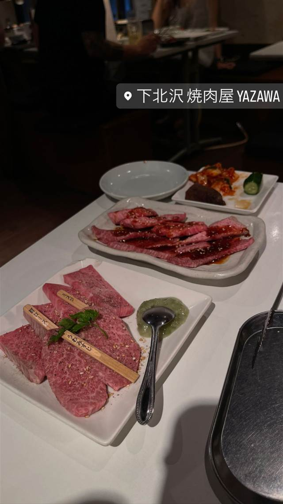

炭火焼肉やざわ 大山店(YAZAWA)
下北沢の人気店「YAZAWA」の系列、A5黒毛和牛の焼肉
下北沢 焼肉屋 YAZAWA
下北沢で人気の焼肉店「YAZAWA」が2023年4月に板橋区大山へ出した系列2号店。店主・矢澤稔氏が手がけ、A5ランクの黒毛和牛を使った焼肉が楽しめる。
TRIVIA
豆知識
- 下北沢の人気店『YAZAWA』の系列2号店として2023年4月にオープン
- 本店の下北沢YAZAWAは2011年7月開店
REVIEWS
世間の評判
3.31食べログ
A5和牛のコスパと無煙の店内
- A5ランクのお肉を手頃な価格で楽しめるコスパの良さを評価する声が多い
- しっかりした換気のおかげで店内に煙や油っぽさが少ないという声がある
- 評判が急上昇していて他の店が空いていてもここだけ満席になるほどの人気だという声もある
食べログ
| 創業 | 下北沢本店は2011年7月開店。大山店は2023年4月29日オープン。 |
|---|---|
| 系譜 | 下北沢の人気焼肉店「YAZAWA」の系列2号店として板橋区大山の遊座大山商店街に出店した。 |
| 看板 | A5ランク黒毛和牛の焼肉 |
| どこから | 23区の外れ・近郊 |
| 予算 | 夜 ¥4,000～¥4,999 |
| 場所 | 大山 東京都板橋区大山東町59-1 |
| メモ | 2,800円（税込）からのコースがあり飲み放題も追加可能。1階はカウンター・テーブル席、2階は貸切対応可、全席禁煙。 |
食べたもの：焼肉
NEARBY
近い店・同じ系統の店
-
 ★
二郎系(インスパイア) 大山
自家製麺 No11
富士丸出身の店主が繰り出す350g極太麺の二郎系
夜 ¥1,000～¥1,999
★
二郎系(インスパイア) 大山
自家製麺 No11
富士丸出身の店主が繰り出す350g極太麺の二郎系
夜 ¥1,000～¥1,999
-
 ★
焼肉 白金高輪駅
炭焼 金竜山
ロンドン帰りの店主夫妻が焼く上タン塩とシャトーブリアン
夜 ¥20,000～¥29,999
★
焼肉 白金高輪駅
炭焼 金竜山
ロンドン帰りの店主夫妻が焼く上タン塩とシャトーブリアン
夜 ¥20,000～¥29,999
-
 ★
焼肉 関内駅
関内苑 本店
韓国職人仕込みのキムチとA5和牛の手打ち冷麺
昼 ¥1,000～¥1,999
★
焼肉 関内駅
関内苑 本店
韓国職人仕込みのキムチとA5和牛の手打ち冷麺
昼 ¥1,000～¥1,999
-
 ★
焼肉 鶯谷駅
焼肉 鶯谷園
1968年創業、半世紀以上続く良心価格の厚切りタン
夜 ¥6,000～¥7,999
★
焼肉 鶯谷駅
焼肉 鶯谷園
1968年創業、半世紀以上続く良心価格の厚切りタン
夜 ¥6,000～¥7,999
-
 ★
焼肉 不動前
焼肉しみず
牛タンの中心部だけを使う厚切り黒毛和牛タン
夜 ¥10,000～¥14,999
★
焼肉 不動前
焼肉しみず
牛タンの中心部だけを使う厚切り黒毛和牛タン
夜 ¥10,000～¥14,999
-
 ★
焼肉 飯田橋駅
好ちゃん 飯田橋本店
食べログ百名店に6年連続選出されたホルモン焼肉
夜 ¥6,000～¥7,999
★
焼肉 飯田橋駅
好ちゃん 飯田橋本店
食べログ百名店に6年連続選出されたホルモン焼肉
夜 ¥6,000～¥7,999